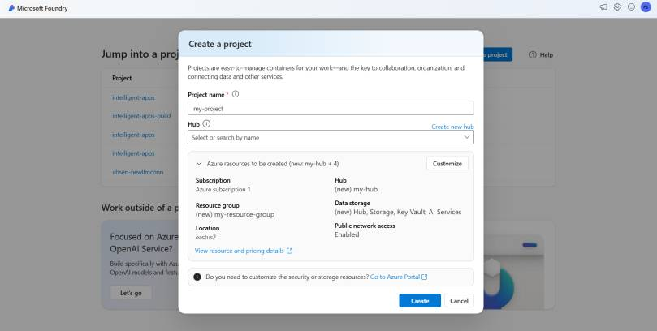
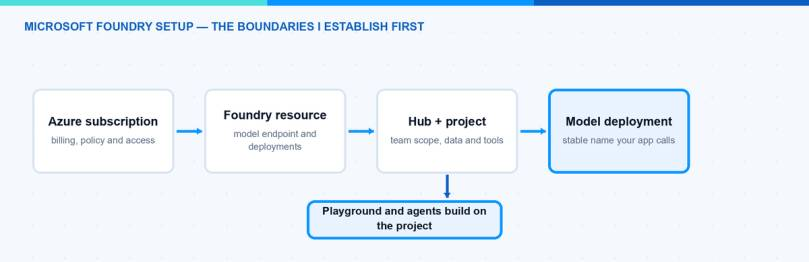
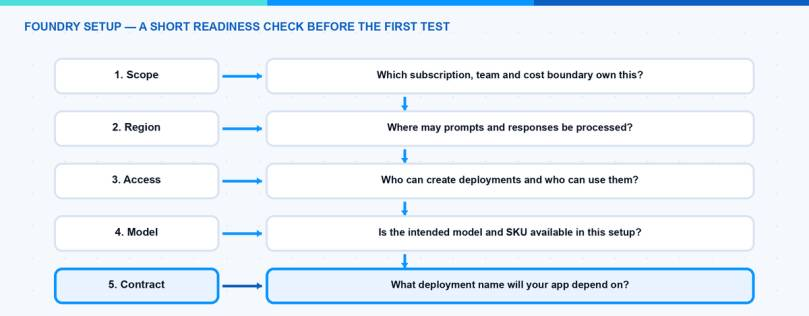

The first Microsoft Foundry screen can feel like a wall of new words. Workspace, project, model and deployment appear almost at once, even though they do different jobs. If you are new to Foundry, start with this: a project is the concrete use case your team works on, a model is the capability you want to try, and a deployment is the named version that an app can call. The word workspace needs a little more care — I explain that below.
You can create all three quickly. The useful part is making the first setup easy to understand when you return to it next week. In this post I show the small, practical structure I use before an experiment turns into an application dependency.
The video below shows the practical click path in German. This article adds a beginner-friendly explanation around it, so you know what each choice means before you move on.
Start With One Small Outcome
Before you open the model catalog, write down one sentence about the first thing you want to test. For example: “Turn an internal support question into a short checklist.” That is enough for a first run. You do not need an agent, a document store and five tools on day one.
For a first Microsoft Foundry setup, I aim for this simple path:
- Create or select a development project.
- Add one model deployment with a name that explains its purpose.
- Open Playground and test one normal question, one unclear question and one question the setup should not answer.
New to Foundry? Do not worry about every option in the portal. Start with a development scope and one narrow task. You can add data, tools and production controls once the basic behaviour is clear.
What Does a Good Setup Need to Achieve?
A good setup is not the biggest one. It is the smallest setup where the ownership, location and next technical step are obvious. When somebody asks where the model runs, which project owns the test or what an application calls, the answer should not depend on who clicked through the portal first.
For me, the first outcome is a clear boundary. I want to know which Azure subscription owns the cost, which resource group groups the work, which region or data boundary is acceptable and which team can make changes. This is basic Azure work, but it matters even more for AI because requests can contain business context, source data and user input.
The second outcome is a clear path from experiment to use. A model in the catalog is only an option. A model deployment is the usable endpoint that an application can address. A project gives the team a place to work with that capability in Foundry. Mixing those three names up is the easiest way to make a small proof of concept hard to explain six weeks later.
Finally, I want a written decision, even if it is only a short README next to the code. It should say what the setup is for, who owns it, what data boundary applies and which deployment name an application may use. That is enough structure for a first internal experiment. It is also enough to spot when an experiment is growing into a real service.
Microsoft Foundry Setup: Choose the Boundary Before the Model
The Microsoft Foundry setup starts outside the model catalog. Start with the Azure scope instead:
- Pick the subscription that should own cost, policy and access.
- Pick a resource group that makes the project easy to find and clean up.
- Pick a location after you understand the data-residency requirement, not because it is the first region in a drop-down list.
- Decide whether the work is only model inference or whether the team needs project capabilities such as Playground and agents.
Microsoft documents these as separate pieces for a reason. A Foundry resource can hold model deployments and serve inference on its own. A hub and project can be connected to that resource when you need the wider Foundry experience, including Playground or agents. That distinction is useful: do not create extra structure only because a tutorial did, but do create the project boundary when people, data and agent work need a shared home. The current Microsoft resource guide is a good reference before you choose the route.

The Create a project dialog is the first place where the important choices become visible: project name, hub, resource group and location. Screenshot from Microsoft Learn. The portal UI can change, but these choices are worth pausing on.
I use simple names at this stage. For example, foundry-support-dev is easier to understand than a generated resource name. The name should say what the resource is for and which environment it belongs to. It does not need to encode every model, person or feature. Those things change too often.
There is also a practical security benefit. If development and production are separate from the beginning, test traffic cannot quietly share the same deployment, spending limit and access model as a user-facing workload. You can still keep the setup small. Separate does not have to mean complicated.

Workspace, Project, Model and Deployment: What Is the Difference?
These terms sound close, but they answer different questions. The confusing part is that workspace is often used as a general word and also appears in older, hub-based Foundry documentation. In the current Foundry portal, the real Azure parent object is a Foundry resource and a project is a child of it.
| Part | The question it answers | What I keep stable |
|---|---|---|
| Foundry resource | What is the shared Azure boundary for this platform? | Subscription, resource group, region, network and policy decisions |
| Workspace / hub in older docs | What is the shared area that projects inherit from? | Treat it as older or broader vocabulary; check whether the guide is for the classic portal |
| Foundry project | Which specific use case or environment is the team building? | Purpose, team scope, project connections and test assets |
| Model | Which underlying capability do we want to evaluate? | Model family and the reason it fits the task |
| Deployment | Which named configuration may an app call? | Deployment name, environment and intended workload |
I find the office analogy useful. The Foundry resource is the building: it sets the shared address, security and operating boundary. A project is one room in that building for a clear job, for example support-agent-dev. The word workspace describes that shared place in everyday conversation, but it is not a second project object you need to create in the current portal.
In other words: use one Foundry resource when the team should share the same platform boundary, then create a project for each meaningful use case or environment. A support agent in development and an HR agent in production should not become one large project just because they are both “AI work.” Give each one a name that explains its job.
Note: If a screenshot or Microsoft Learn guide mentions a hub or workspace, check whether it is describing the classic, hub-based experience. New Foundry projects are the direction for current end-to-end scenarios, while hub-based projects remain a classic-portal concept. Microsoft’s current resource model overview and migration map are the two references I use before following an older click path.
The model is the capability being evaluated. The catalog may offer several versions, providers and deployment types. I choose it against a concrete task: summarising support cases, producing structured extraction, helping with a knowledge-base question or calling a tool. “The newest one” is not a selection rule.
The deployment turns the model choice into something a client can call. That is why I treat its name as an interface. An app should depend on support-chat-prod, not on the person who created it or the month it was deployed. If I later need a second configuration for a controlled test, I create a second clearly named deployment instead of silently changing the one the app uses.
Microsoft explicitly supports deploying the same model more than once when the deployments use different names. This is helpful when configurations, content filters or usage patterns need to be tested side by side. It is not a reason to duplicate everything. Keep one stable path for each purpose and make the reason visible.
Cheat Sheet: The Setup Choices That Matter
| If you are doing this | Start with | Do not skip |
|---|---|---|
| A short model test | One development scope and a clear deployment name | Cost owner and model availability in the chosen region |
| A Playground experiment | A project with one focused task | A small prompt set that proves the behaviour you expect |
| An internal agent proof of concept | Development project, named deployment and least-privilege access | Data source and tool boundaries before connecting them |
| A production workload | Separate production scope and written ownership | Data residency, identity, monitoring and a rollout decision |
The point of this table is not to turn every test into an architecture review. It is to avoid the two missing decisions that are expensive later: where data may be processed and what an application is allowed to depend on.
For a first model test, I often stay deliberately narrow. One project, one task, one deployment and a small list of prompts are enough. Add more only when the work needs it. A large catalog and many tools do not make the test more trustworthy.
Keep a Small Setup Record
I keep a small record next to the work from the first day. It is not a long architecture document. One page is normally enough. It contains the problem statement, subscription, resource group, region or data zone, project name, deployment name, model choice and the person or team who owns the next decision.
I add the source and tool boundary as well. If the agent answers only from the prompt today, I write that down. If a later iteration adds a document collection or a custom function, the record changes with it. This makes the scope visible without turning a quick experiment into a paperwork exercise.
The last line is the test path: which prompts passed, which prompt exposed a gap and what needs to happen before the work moves forward. That line is especially useful when a different colleague returns to the project. They can see the intent before they see the portal configuration.
I also record what I deliberately did not build. For example, “no production users”, “no customer data” or “no write-capable tools” are healthy limits for an early test. Clear limits make it easier to approve the next step because everyone can see what has not happened yet.
The Simple Decision Tree I Use
When I set up a new use case, I go through these questions in this order:
- What is the task? Write one sentence that a colleague could recognise. “Answer internal support questions from approved documentation” is better than “build an AI assistant.”
- What is the boundary? Choose subscription, environment, owner and allowed data location.
- What is the working area? Create or select the Foundry resource and project that fit the boundary.
- Which model can serve the task? Check availability and the deployment type offered in that region.
- What will the client call? Create a purposeful deployment name before you paste it into code or a tool configuration.
- How will I verify it? Keep a short prompt set, expected behaviours and a way to see which deployment answered.
The order matters. If I choose the model first, I can end up backing into a region or processing decision that the business cannot accept. If I create the deployment first, I can end up with a name that looks harmless until it becomes a client contract. The Microsoft Foundry setup is easier when each decision has a home.

Pitfalls I Now Avoid
The first pitfall is treating a portal demo as a production environment. A successful answer proves that the current prompt reached the current model. It does not answer who owns the cost, whether the correct people have access, which data boundary applies or how the service will be monitored.
The second pitfall is using a deployment name that describes a temporary moment. Names such as gpt-test-final-v4 work until a script, agent or app starts relying on them. I use a name that states the workload and environment instead, then keep the model change as a separate, reviewed decision.
The third pitfall is connecting every available capability at once. File search, web search and custom tools are useful, but every connection changes the data path and the failure modes. Start with the smallest set that can prove the use case. Add a connection only when the prompt set shows a real gap.
The fourth pitfall is assuming a region name answers every compliance question. The deployment type also affects where prompts and responses are processed. Before a production decision, read the current deployment-type guidance and confirm it with the people responsible for policy and data protection. The answer can change as model availability changes.
Where This Is Heading
Once the setup is stable, I move the important parts out of memory and into repeatable configuration. That can start with a short document and a simple CLI check. Microsoft documents how to list models and their available SKUs, create a named deployment and verify that its provisioning state is Succeeded in the model deployment guide.
# Check the deployment that an application is expected to call.
az cognitiveservices account deployment show \
--deployment-name support-chat-prod \
--name <foundry-resource-name> \
--resource-group <resource-group>
You do not need to automate everything on day one. But the more important the workload becomes, the less I want critical choices to exist only in a portal history. A consistent project, a deliberate model decision and a stable deployment name are the right first ingredients.
If you are choosing between many models after the initial setup, my post on the Microsoft Foundry model router and catalog is the useful next read. It goes deeper into choosing a model at request time without losing control of the decision.
I hope this is a little help.
Stay healthy, Cheers Jannik